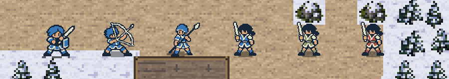
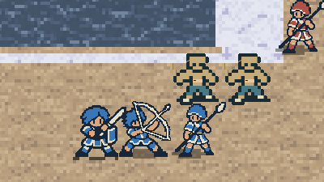
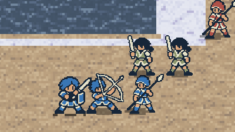
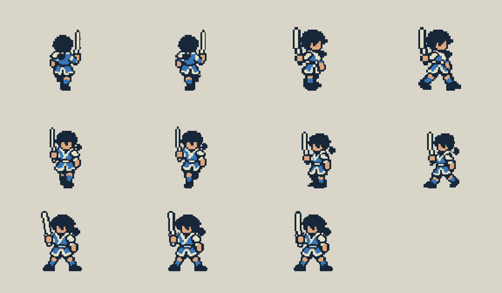
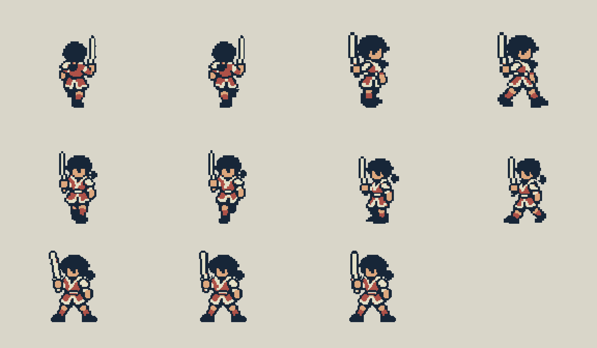

佣兵 · 待机与四向行走
按男主、弓箭手和枪兵已验收的体量与四色风格制作。首关村民复用佣兵轮廓，使用中立衣色；连续阴影固定在脚下。
与已验收角色在实际地图中对照

深色束发、单侧肩饰、衣襟和分片短下摆保留佣兵身份；脚下投影连续，不跟随抬脚消失。
首关村民复用形象


使用项目首关实际地面和渲染器预览。本轮仅在审阅进程中临时替换形象，游戏内村民职业与任务数据保留。
双方完整动作演示
顺序为友方待机、上／右／下／左行走，再展示敌方同组动作。需要逐帧或切换深浅底时，使用上方“全动作对照”。
本轮动作核对


待机固定头身和双脚；持剑整臂与直剑变化。向上剑在画面右侧，向右、向下、向左的剑在画面左侧，保留原作方向差异。直立、跨步与交替落脚均已区分。